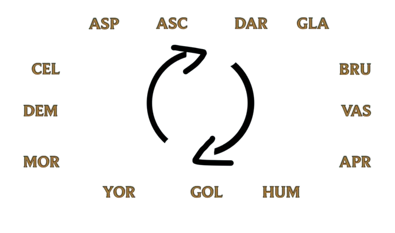

Bem-Vindo a Rune!
Rune consiste em um jogo de cartas baseadas no universo de League Of Legends.
O jogo consiste em um mix de estratégia e sorte, onde os jogadores terão que batalhar pela posse de suas cartas.
Regras do Jogo
- Ambos os jogadores começam com 3 pontos e 1 deck, que serão perdidos a cada turno. Aquele que perder todas as suas vidas perde suas cartas e é eliminado.
- Turnos: Os turnos consistem em 3 cartas de cada jogador viradas de cabeça para baixo que vão sendo mostradas da esquerda para direita sendo enfrentadas pela carta da frente.
- Deck: O Deck são as 12 cartas que jogador escolhe antes de entrar em batalha.
TABULEIROS
.jpg)
Condições de Vitória
- 1° Região X Região:
As regiões nem sempre são rivais, mas aqui elas são. Seguindo o círculo abaixo, você vence das duas regiões à frente.
Por exemplo:
Demacia(DEM) > Ionia(ION) e Ixtal(IXT). - 2° Raça X Raça:
Sabemos que as raças têm pontos fortes e pontos fracos. Aqui veremos eles. Seguindo o círculo abaixo, a carta de raça vence das duas raças à frente.
Por exemplo:
Brutamontes(BRU) > Vastayas(VAS) e Aprimorados(APR).

- 3° Raridade:
Caso vocês ainda não tenham conseguido ganhar da carta oponente, a vitória será dada a quem tiver a carta com maior raridade.
Modos de Jogo
- Casual: É jogado por 2 jogadores com 1 deck e 5 pontos.
Recompensa:
X quantidade de ouro. - Ranked: É jogado por 2 jogadores com 3 decks e 15 pontos (sendo que podemos
escolher 1 deck a cada 5 pontos de vida).
Recompensa:
Valor de Ouro dos dois participantes e pacote de figurinha randômico. - Morte-Subita: É jogado por 2 jogadores com 1 deck e 5 pontos.
Recompensa:
Cartas do oponente e Y quantidade de ouro.
Porém, temos que contar uma coisa... Por mais que todos nós queiramos estar gastando o nosso tempo com isso, ainda está em desenvolvimento.
Mas desde já, seja bem-vindo ao Rune!